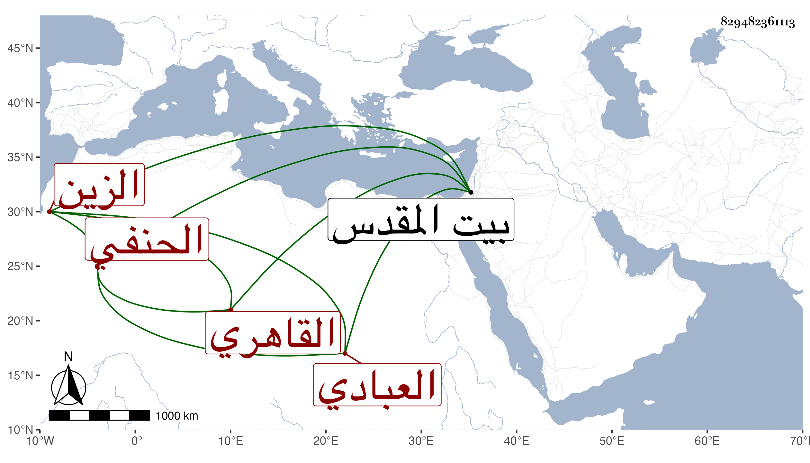

0902Sakhawi.DawLamic.ITO20230111-ara1.EIS1600.829482361113
Biography ID: 829482361113
904
سالم بن خليل بن إبراهيم الزين العبادي القاهري الحنفي . نشأ فقيرا مقلا وصحب أزبك الظاهري جقمق قديما ولازم خدمته وأم به ، بل كان معه ببيت المقدس فراج أمره وصار هو المرجوع إليه عنده حتى تمول كثيرا وضخم واشتهر ذكره ، وأضيف إليه من الجهات الدينية والمرتبات ما يفوق الوصف ، ومن ذلك خزن كتب المحمودية مع عقل وسكون واحتمال وإقبال وتواضع وتوابع وقد تكرر حجه مرارا منها في سنة ثمان وتسعين موسميا ليكون نظره على ولد الأمير حين كونه أمير الأول وعلى زوجته خوند ابنة الظاهر والله تعالى يحسن عاقبته .
